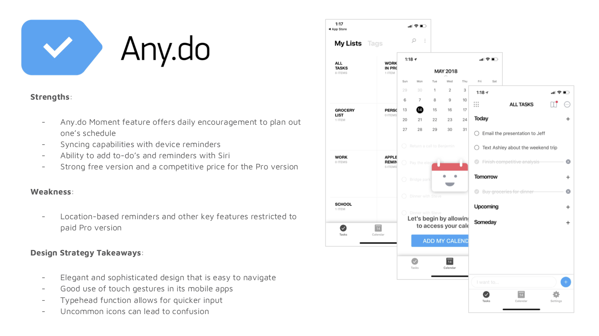
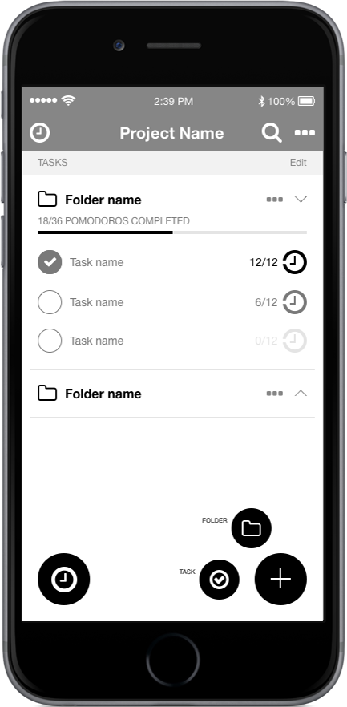
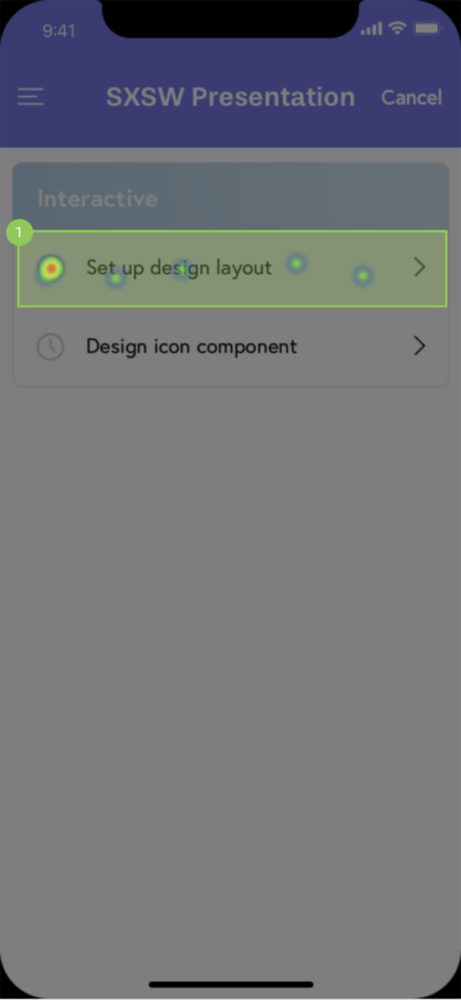

Pomlist
iOS App
User Experience, Branding, Visual Design
3 months // 2018
I have been an avid user of the Pomodoro Technique and was on the hunt for a full featured to-do list app with integration of the Pomodoro Timer. When it was time for me to pick out my capstone project, I thought why not use this opportunity to create a product that I am truly passionate about? I enjoyed building this from the ground up and hope to develop it in the future!
Project Overview
Setting measurable goals and timeframes is key to success. By integrating a to-do list with the Pomodoro Timer that also tracks progress, Pomlist was designed with a goal of increasing focus, productivity and accountability among users.
Problem
Focus fatigue is a common issue in school or workplace and making accurate estimations on tasks and projects suffers due to this. The inability to make accurate estimates and the hours wasted on distractions disrupts planning and can be costly.
Solution
Pomlist solves the problem of focus fatigue by providing an interface where users can create a running list of grouped tasks and use pomodoros. The timer feature is also capable of tracking progress for each task and project, thus assisting with making smarter future timeline predictions.
1. Empathize
First, I needed to validate and understand the users' motivations and needs behind creating to-do lists through research. I also utilized this effort to determine if there was even a need for a product like Pomlist. Then I studied the competitive landscape in order to gain insights that would later help shape Pomlist.
Survey
I conducted a Google Forms survey with 20 participants and learned that a) 95% create to-do lists and that b) reminders and notifications are rated as the most important features of to-do list apps. Also, while (c) 75% of people have not used the Pomodoro Technique before, (d) 100% are open to exploring a to-do list app that utilizes the Pomodoro Technique.
Competitive Analysis
Despite the productivity app space being overcrowded, none successfully or cohesively integrates task management and Pomodoro Technique together. The apps are either too simple or complex; designing an intuitive yet sophisticated UX with good use of touch gestures would attract and retain the target demographic of 18-34.

2. Define
By learning about the audience for whom I am designing, I was able to create a point of view that is based on user needs and insights. During this stage, I built user personas, user stories, and user flows.
User Personas
After interviewing a group of potential users, I was able to identify three following personas:

User stories & flows
According to research by Perfecto Mobile, one of the main reasons why mobile apps fail is due to poor UX and over-engineering. Therefore, I created stories and flows with a goal of having the users easily access Pomlist’s core functionality and solve their problem using as little taps as possible.
3. Ideate
I gathered additional feedback from potential users on the features and main navigation screens:
Sketching & Low-fidelity Prototyping
Based on these insights that I had collected over various research methods, I sketched out wireframes first then built low-fidelity wireframes. After printing the wireframes out, I continued to ask users for feedback through paper prototyping and made iterations throughout the process.
Dashboard

Project
Timer
4. Brand Identity
I stepped away from wireframes to decide on a brand name and develop a logo. I had a general idea of what the primary color should be for the app, as well as what the logo should consist of, but definitely needed user feedback to make the final decision.
Name
The name “Pomlist” was created with the two main features of the app in mind: to-do list and pomodoro timer. It was chosen out of five options by receiving 66.7% of the votes in the preference test.
Logo
For the logo, I chose a water drop and leaf to signify “growth.”The leaf side shows a list of items while the water drop side has a water reflection that is to represent time and progress. Logo F won 61.5% of the votes from the preference test.
Style Guide
I created a branding style guide to stay consistent throughout my design process.
5. Prototype & Validate
During the high-fidelity wireframing and prototyping phase, I ran into a few challenges that required several user testing to solve through.
Challenge #1 - Dashboard
Iteration #1
Iteration #2
Final
Challenge #2 - Icons
Menu // initial choice resembled the gripper (for sorting) too much
More Options // some users believed the first icon looked like a filter
Color // the purpose of the tear drop symbol was not clear to users
Challenge #3 - User Flows
Adding Project (Iteration)
Adding Project (Final)
Adding Tasks (Iteration)
Adding Tasks (Final)
Challenge #4 - Timer
Iteration
Iteration Step 1 Heatmap
Iteration Step 2 Heatmap

Final
Final Step 1 Heatmap*

Final Step 2 Heatmap
* Majority of people that did not pass step 1 tapped the open circle to the left of the task, which they would learn by actually using the app that it would just mark the task as complete.
Challenge #5 - Onboarding

Iteration - sign up required
Final - sign up not required
Final Deliverable
In total, I designed 100+ screens in Sketch and created a clickable prototype using Marvel.
Takeaways
One of the main learnings from my first project was to do more research, as well as user testing, so I made sure to accomplish that with this project. Doing more research and making data-driven decisions allowed me to feel more confident about my design choices. My favorite part about user testing is being able to observe how users actually use the product and discover any user behavior insights that would ultimately allow me to create a product for them.
In the future, I would like to conduct even more research in the beginning and try affinity mapping and customer journey mapping. I tried a few new tools this time around, such as Marvel and Axure, so I would like to continue challenging myself to explore new tools like Figma, Flinto, and Zeplin. Lastly, I want to sketch more - it really is the fastest and most effective way to bring out your ideas. I recently purchased a sketch notebook, so I have no excuse!